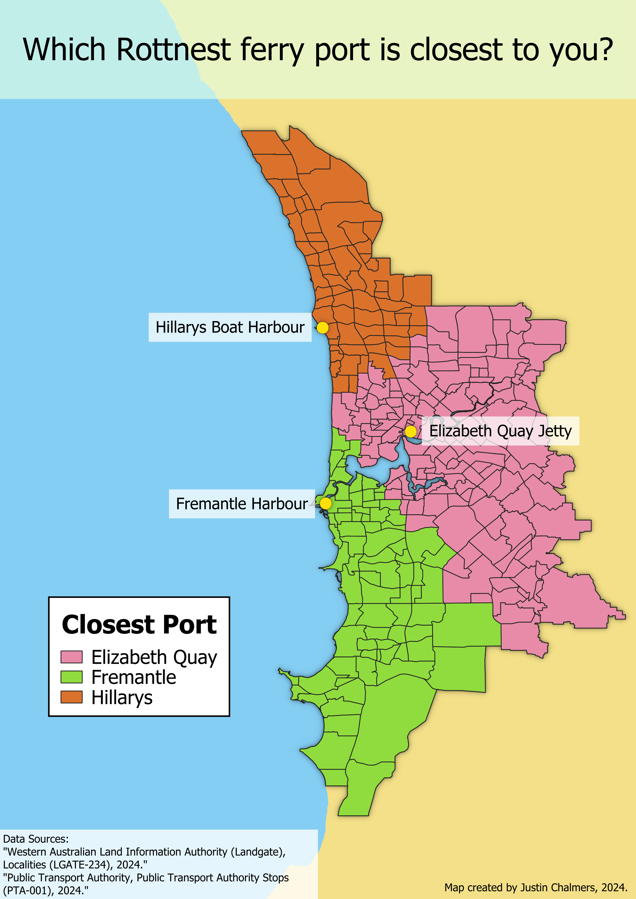

Justin Chalmers - GIS Portfolio 🌏
Welcome to my GIS/mapping portfolio! I'm Justin. I graduated from the University of Toronto from the department of geography and planning. I love working with: maps, programming, data, and using GIS to visualise geographic information in creative and informative ways. Scroll down to see my projects.
Parkdale Public Washroom Locations

This map dispalys all of the public washrooms in the Parkdale region of Toronto. My friends and family I grew up with have wondered about where to find public washrooms while out in the neighbourhood. I used data from Toronto Open Data Portal of all public washrooms in the city.
Rottnest Island Ferry Ports
Rottnest island is a popular travel spot in Perth, Australia. There are three ferry ports in the city that go to the island and finding which is the most convenient to take is common convesation among locals. I made this map to visualise which ferry port is closest to each suburb.
Favourite Toronto Restaurants - Web Map
 2.png)
I made an interactive web map using React and leaflet JS library to display where my favourite restaurants are in Toronto. The map includes clickable markers with small descriptions on each location.